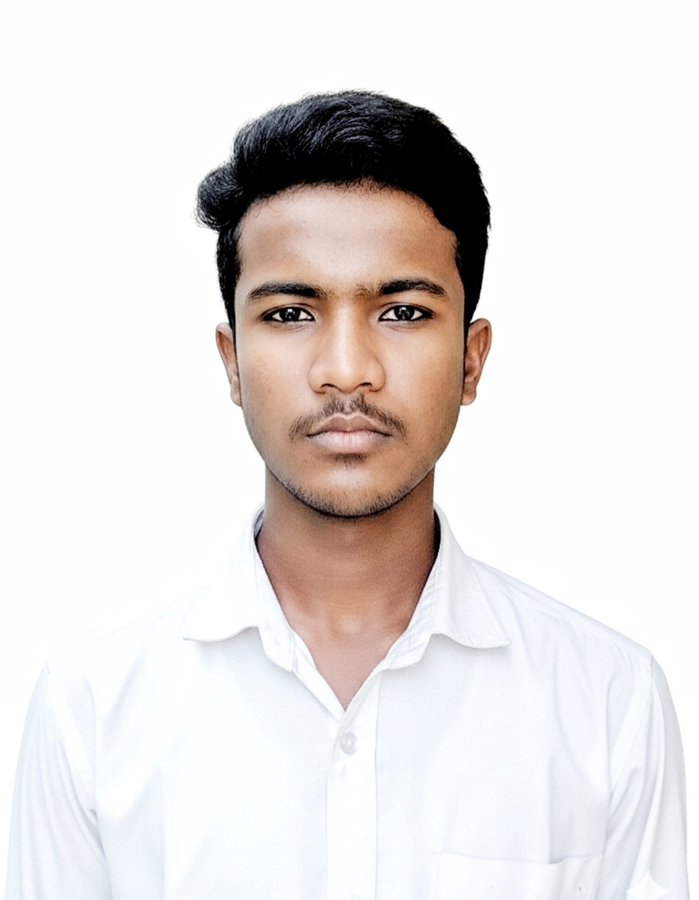
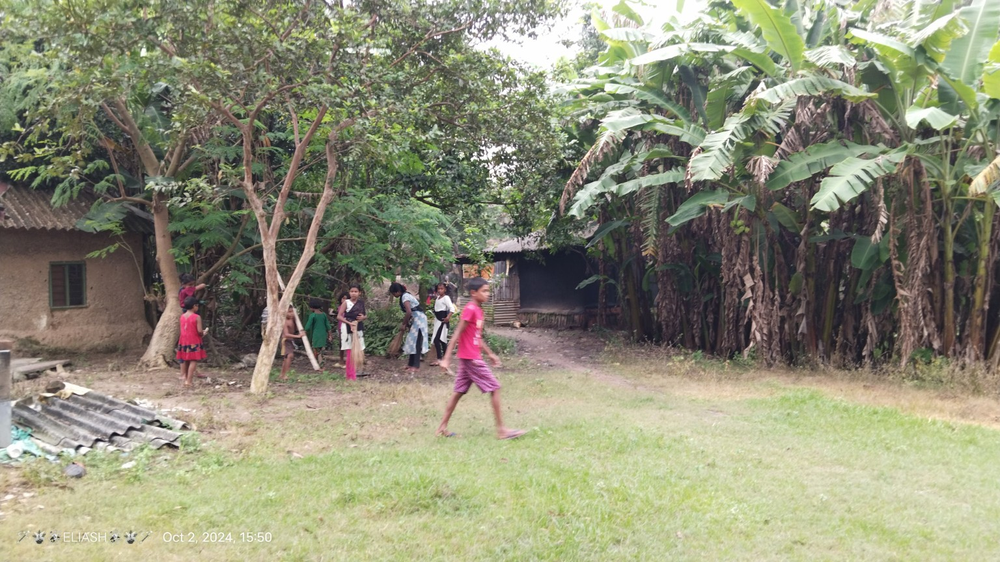
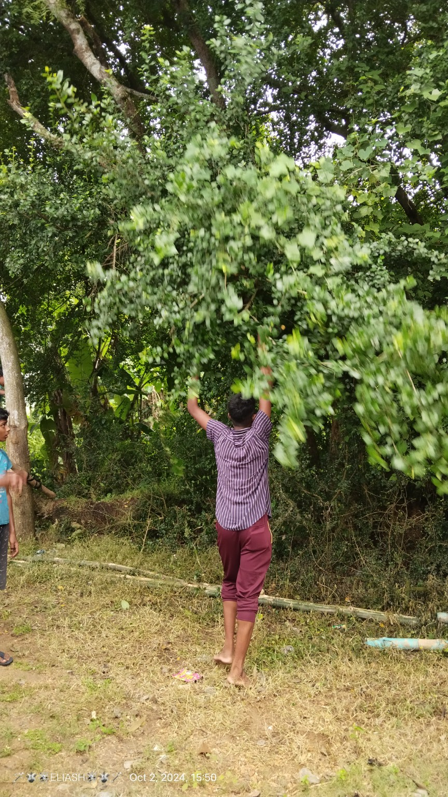
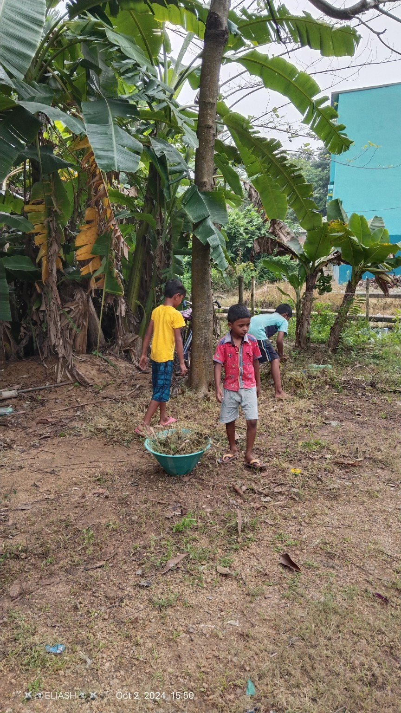
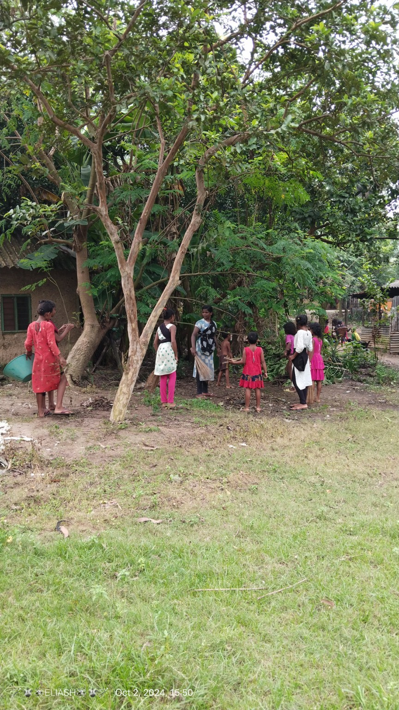
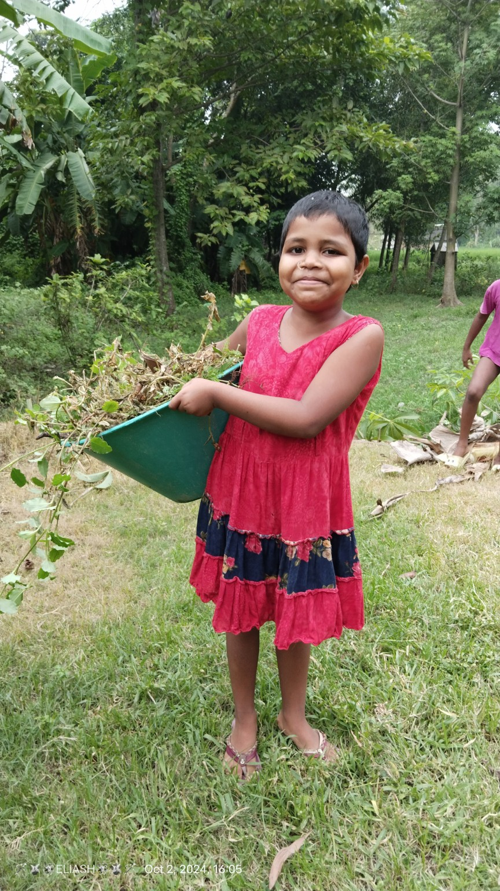

✓ Profile Complete
ইলিয়াস খান
Program Manager
بِسْمِ اللهِ الرَّحْمٰنِ الرَّحِيْمِ
বার্ষিক ক্রীড়া ও ইসলামিক সাংস্কৃতিক প্রতিযোগিতা
ANNUAL FUNCTION 2026 & EID-E-MILAD-UN-NABI
প্রতিটি কার্ড থেকে সরাসরি সেই প্রতিযোগিতায় নাম নথিভুক্ত করুন।
একবার তথ্য দিয়ে এক বা একাধিক প্রতিযোগিতা নির্বাচন করা যাবে।
ফুরফুরা শরীফের সঙ্গে সম্পর্কযুক্ত পীরজাদা উজায়ের সিদ্দিকী পশ্চিমবঙ্গের পরিচিত ইসলামি বক্তা ও ধর্মীয় আলোচক। বাংলা ভাষায় ইসলামি ওয়াজ, সুন্নি আকিদা এবং বিভিন্ন ধর্মীয় ও সামাজিক বিষয়ে তিনি আলোচনা করে থাকেন।
অসম্পূর্ণ প্রোফাইলে KYC জমা দিন। Program Manager অনুমোদনের পর প্রোফাইল সম্পূর্ণ হবে।

Program Manager
Cashier
নাম, মোবাইল ও ছবি দিয়ে আবেদন করুন। অনুমোদনের আগে আপনার তথ্য public হবে না।
এতদ্বারা সকল গ্রামবাসীবৃন্দ ও সর্বসাধারণের অবগতির জন্য জানানো যাচ্ছে যে, প্রতি বছরের ন্যায় এই বছরও আমাদের কোকন্দ জামে মসজিদ প্রাঙ্গণে আগামী ৩০ ও ৩১ ডিসেম্বর, ২০২৬ দুই দিনব্যাপী বার্ষিক ক্রীড়া ও ইসলামিক সাংস্কৃতিক প্রতিযোগিতা এবং পবিত্র ঈদ-ই-মিলাদুন্নবী (সাঃ) উদযাপন অনুষ্ঠানের আয়োজন করা হয়েছে। উক্ত মহতী অনুষ্ঠানে এলাকার সকল ধর্মপ্রাণ ভাই-বোন, তরুণ সমাজ ও শিশুদের সপরিবারে উপস্থিত থাকার জন্য সাদর আমন্ত্রণ জানানো হচ্ছে।
বিনীত — Annual Cultural Program Committee, কোকন্দ জামে মসজিদ৩০ ও ৩১ ডিসেম্বর ২০২৬-এর ক্রীড়া, ইসলামিক সাংস্কৃতিক প্রতিযোগিতা, পুরস্কার বিতরণী এবং বিশেষ ধর্মীয় আলোচনার পূর্ণ সময়সূচি উপরের “অনুষ্ঠানসূচি” বিভাগে দেওয়া হয়েছে। সকলকে যথাসময়ে উপস্থিত থাকার অনুরোধ করা হচ্ছে।
শৃঙ্খলা বজায় রাখুন ও সুশৃঙ্খল পরিবেশ গড়ে তুলুন।




পরে আরও ছবি assets/gallery/first-year/ ফোল্ডারে যোগ করা যাবে।